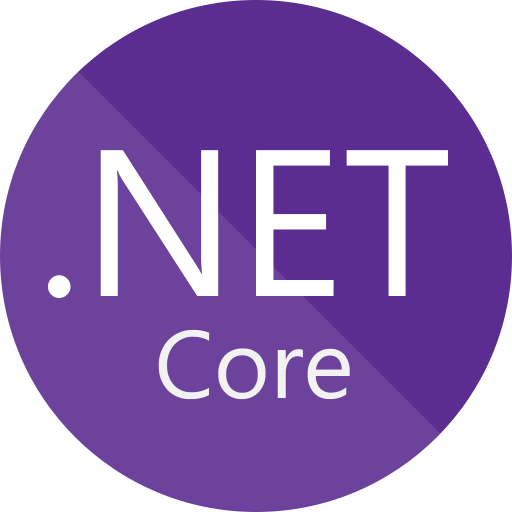

<mat-toolbar color="primary">
     <span>Sistema de Facturación</span>
     <span class="fill-remaining-space"></span>

     <span class="mat-body-2">
          <button mat-icon-button [matMenuTriggerFor]="menu" aria-label="Example icon-button with a menu">
               <mat-icon>dashboard</mat-icon>
          </button>
          <mat-menu #menu="matMenu">
               <button mat-menu-item (click)="abrirMantenimiento()">
                    <mat-icon>build</mat-icon>
                    <span>Mantenimiento</span>
               </button>
               <button mat-menu-item (click)="abrirProcesos()">
                    <mat-icon>business</mat-icon>
                    <span>Procesos</span>
               </button>
               <button mat-menu-item (click)="abrirConsultas()">
                    <mat-icon>zoom_in</mat-icon>
                    <span>Consulta</span>
               </button>
          </mat-menu>
     </span>
</mat-toolbar>

<router-outlet></router-outlet>

<mat-toolbar color="primary">
  <div class="mat-typography">
    <h5>© Copyright 2020. All rights reserved.</h5>
  </div>
  <span class="fill-remaining-space"></span>

  <h5>Developed using</h5>
  <span></span>
  <h5> and </h5>
  <span></span>
  <h5> by Jesús Estévez.</h5>

</mat-toolbar>
